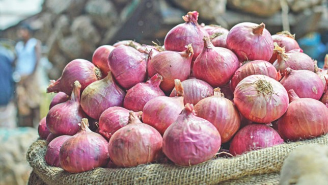
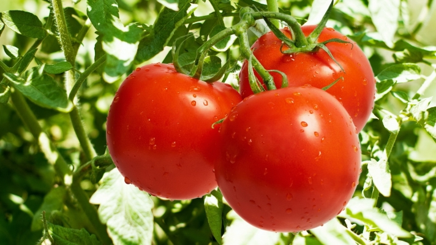
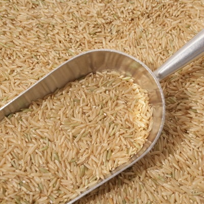

PRICE:30/Kg BENIFITS:
Onion can fill your kitchen with a thick spicy aroma. It is a common base vegetable in most Indi an dishes, thanks to the wonderful flavor that it adds to any dish.
Product image shown is for representation purpose only, the actually product may vary based on season, produce & availability.
TOMATOES

PRICE:44/kg ABOUT THE PRODUCT:Tomato Hybrids are high-quality fruits compared to desi, local tomatoes. They contain numerous edible seeds and are red in colour due to lycopene, an anti-oxidant.
Tomatoes contain lycopene, an antioxidant that reduces the risk of cancer and heart-diseases. They protect the eyes from light induced damage.
RICE

PRICE:57/Kg ABOUT THE PRODUCT:Brown rice is whole grain rice, with the outer hull removed; white rice is the same grain after further milling and polishing to remove the bran layer and germ. Brown rice has a mild, nutty flavour, and is chewier and more nutritious than white rice. Organic Brown Rice is high in selenium - a vital mineral that decreases the chances of developing many illnesses. Just a cup of brown rice can supply at least 80% of our daily manganese necessities. There is a whole lot of variation between white rice and brown rice, and the most essential one being, unlike white rice, brown rice has not lost its completeness. This rice is more healthful than polished rice. This is cultivated without the use of pesticides, artificial fertilizers or chemicals.